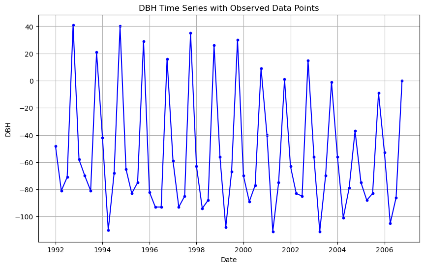
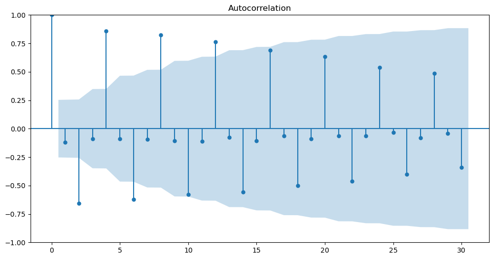

import pandas as pd
import matplotlib.pyplot as pltProblem Set 03

Instructions: 1. Name: 1. Create a new ChatGPT chat called “SDS390 PS03” that contains all the prompts you used for this problem set. After you’ve completed your assignment, click the share button and paste the URL in Markdown format here (shared ChatGPT links don’t auto-update with subsequent queries).
Overview of this PS: You will be recreating graphs and explicitly computing values from “FPP 5 - The forecaster’s toolbox” in python. Specifically
- FPP 5.2 - Some simple forecasting methods: Recreate Fig 5.7
- FPP 5.4 - Residual diagnostics: Recreate the 3 components of Fig 5.13
- FPP 5.8 - Evaluating point forecast accuracy: Recompute the 3 RMSE and 3 MAE values (corresponding to naive, mean, and seasonal naive methods) in table using data wrangling
FPP 5.7 - Forecasting with decomposition: Recreate Fig 5.19 by computing all values using data wrangling
Overall instructions:
- Do not use a function from a specialized time series forecasting specific python library to do this PS. Rather use pandas data wrangling, matplotlib, or any other package we’ve used to date (like for autocorrelation functions)
- Depending on your data wrangling approach for the questions below, you may get a warning that says
A value is trying to be set on a copy of a slice from a DataFrame.As long as your values are correct, you may ignore this warning - Using the lessons you learned in the 3rd DataCamp on Data Viz, Chapters 1 and 2:
- Give all your plots titles
- Label all axes
- Make any other cosmetic changes you like
Load and explore data
aus_production = pd.read_csv("PS03_aus_production.csv", parse_dates = ['Quarter'], index_col = 'Quarter')
# aus_production = aus_production.to_period('Q')
print(aus_production.head())
print("\n")
print(aus_production.tail()) Beer
Quarter
1992-01-01 443
1992-04-01 410
1992-07-01 420
1992-10-01 532
1993-01-01 433
Beer
Quarter
2009-04-01 398
2009-07-01 419
2009-10-01 488
2010-01-01 414
2010-04-01 374FPP 5.2: Recreate Fig 5.7
- Recall from Lec 7.2 this requires training (1992 Q1 - 2006 Q4) vs test set (2007 Q1 - 2010 Q2) splitting of data
# Create training set and verify dates
train = aus_production.loc[:'2006']
print(train.head())
print("\n")
print(train.tail()) Beer
Quarter
1992-01-01 443
1992-04-01 410
1992-07-01 420
1992-10-01 532
1993-01-01 433
Beer
Quarter
2005-10-01 482
2006-01-01 438
2006-04-01 386
2006-07-01 405
2006-10-01 491# Create test set and verify dates
test = aus_production.loc['2007':]
print(test.head())
print("\n")
print(test.tail()) Beer
Quarter
2007-01-01 427
2007-04-01 383
2007-07-01 394
2007-10-01 473
2008-01-01 420
Beer
Quarter
2009-04-01 398
2009-07-01 419
2009-10-01 488
2010-01-01 414
2010-04-01 374test["mean_method"] = train['Beer'].mean()
test["naive_method"] = train.iloc[-1, ].Beer
test/var/folders/d_/6fhql14j7hd93zfzcn1x3ttxn8st2y/T/ipykernel_19900/3639978134.py:1: SettingWithCopyWarning:
A value is trying to be set on a copy of a slice from a DataFrame.
Try using .loc[row_indexer,col_indexer] = value instead
See the caveats in the documentation: https://pandas.pydata.org/pandas-docs/stable/user_guide/indexing.html#returning-a-view-versus-a-copy
test["mean_method"] = train['Beer'].mean()
/var/folders/d_/6fhql14j7hd93zfzcn1x3ttxn8st2y/T/ipykernel_19900/3639978134.py:2: SettingWithCopyWarning:
A value is trying to be set on a copy of a slice from a DataFrame.
Try using .loc[row_indexer,col_indexer] = value instead
See the caveats in the documentation: https://pandas.pydata.org/pandas-docs/stable/user_guide/indexing.html#returning-a-view-versus-a-copy
test["naive_method"] = train.iloc[-1, ].Beer| Beer | mean_method | naive_method | |
|---|---|---|---|
| Quarter | |||
| 2007-01-01 | 427 | 436.45 | 491 |
| 2007-04-01 | 383 | 436.45 | 491 |
| 2007-07-01 | 394 | 436.45 | 491 |
| 2007-10-01 | 473 | 436.45 | 491 |
| 2008-01-01 | 420 | 436.45 | 491 |
| 2008-04-01 | 390 | 436.45 | 491 |
| 2008-07-01 | 410 | 436.45 | 491 |
| 2008-10-01 | 488 | 436.45 | 491 |
| 2009-01-01 | 415 | 436.45 | 491 |
| 2009-04-01 | 398 | 436.45 | 491 |
| 2009-07-01 | 419 | 436.45 | 491 |
| 2009-10-01 | 488 | 436.45 | 491 |
| 2010-01-01 | 414 | 436.45 | 491 |
| 2010-04-01 | 374 | 436.45 | 491 |
test['month'] = test.index.month
test/var/folders/d_/6fhql14j7hd93zfzcn1x3ttxn8st2y/T/ipykernel_19900/2545785027.py:1: SettingWithCopyWarning:
A value is trying to be set on a copy of a slice from a DataFrame.
Try using .loc[row_indexer,col_indexer] = value instead
See the caveats in the documentation: https://pandas.pydata.org/pandas-docs/stable/user_guide/indexing.html#returning-a-view-versus-a-copy
test['month'] = test.index.month| Beer | mean_method | naive_method | month | |
|---|---|---|---|---|
| Quarter | ||||
| 2007-01-01 | 427 | 436.45 | 491 | 1 |
| 2007-04-01 | 383 | 436.45 | 491 | 4 |
| 2007-07-01 | 394 | 436.45 | 491 | 7 |
| 2007-10-01 | 473 | 436.45 | 491 | 10 |
| 2008-01-01 | 420 | 436.45 | 491 | 1 |
| 2008-04-01 | 390 | 436.45 | 491 | 4 |
| 2008-07-01 | 410 | 436.45 | 491 | 7 |
| 2008-10-01 | 488 | 436.45 | 491 | 10 |
| 2009-01-01 | 415 | 436.45 | 491 | 1 |
| 2009-04-01 | 398 | 436.45 | 491 | 4 |
| 2009-07-01 | 419 | 436.45 | 491 | 7 |
| 2009-10-01 | 488 | 436.45 | 491 | 10 |
| 2010-01-01 | 414 | 436.45 | 491 | 1 |
| 2010-04-01 | 374 | 436.45 | 491 | 4 |
seasonal = test.groupby('month').mean()[['Beer']].rename(columns = {'Beer':'seasonal_naive'})
seasonal| seasonal_naive | |
|---|---|
| month | |
| 1 | 419.000000 |
| 4 | 386.250000 |
| 7 | 407.666667 |
| 10 | 483.000000 |
test = test.join(seasonal, on = 'month')test| Beer | mean_method | naive_method | month | seasonal_naive | |
|---|---|---|---|---|---|
| Quarter | |||||
| 2007-01-01 | 427 | 436.45 | 491 | 1 | 419.000000 |
| 2007-04-01 | 383 | 436.45 | 491 | 4 | 386.250000 |
| 2007-07-01 | 394 | 436.45 | 491 | 7 | 407.666667 |
| 2007-10-01 | 473 | 436.45 | 491 | 10 | 483.000000 |
| 2008-01-01 | 420 | 436.45 | 491 | 1 | 419.000000 |
| 2008-04-01 | 390 | 436.45 | 491 | 4 | 386.250000 |
| 2008-07-01 | 410 | 436.45 | 491 | 7 | 407.666667 |
| 2008-10-01 | 488 | 436.45 | 491 | 10 | 483.000000 |
| 2009-01-01 | 415 | 436.45 | 491 | 1 | 419.000000 |
| 2009-04-01 | 398 | 436.45 | 491 | 4 | 386.250000 |
| 2009-07-01 | 419 | 436.45 | 491 | 7 | 407.666667 |
| 2009-10-01 | 488 | 436.45 | 491 | 10 | 483.000000 |
| 2010-01-01 | 414 | 436.45 | 491 | 1 | 419.000000 |
| 2010-04-01 | 374 | 436.45 | 491 | 4 | 386.250000 |
# Plot what we do have
plt.figure(figsize=(12, 6))
plt.plot(train.index, train["Beer"])
plt.plot(test.index, test["Beer"])
plt.plot(test.index, test["mean_method"])
plt.plot(test.index, test["naive_method"])
plt.plot(test.index, test["seasonal_naive"])
plt.show()FPP 5.4 - Residual diagnostics: Recreate the 3 components of Fig 5.13
- Compute the three residuals diagnostics plot in Fig 5.13 for the naive method forecasts
- Do this for the training data in the Beer data above. This is because when doing a residual diagnostic of a model, you want to compare observed values \(y_t\) and fitted / predicted / forecasted values \(\hat{y}_t\) for the data you used to fit the model.
- It’s already obvious that there are much better choices than the naive method for forecasting. For each of the three residual diagnostics plots:
- Comment on the residuals pattern you observe
- Explain why the pattern you observe is consistent with the fact that there are much better choices than the naive method for forecasting
train["mean_method"] = train['Beer'].mean()
train["naive_method"] = train.iloc[-1, ].Beer
train['month'] = train.index.month
train = train.join(seasonal, on = 'month')/var/folders/d_/6fhql14j7hd93zfzcn1x3ttxn8st2y/T/ipykernel_19900/2917350215.py:1: SettingWithCopyWarning:
A value is trying to be set on a copy of a slice from a DataFrame.
Try using .loc[row_indexer,col_indexer] = value instead
See the caveats in the documentation: https://pandas.pydata.org/pandas-docs/stable/user_guide/indexing.html#returning-a-view-versus-a-copy
train["mean_method"] = train['Beer'].mean()
/var/folders/d_/6fhql14j7hd93zfzcn1x3ttxn8st2y/T/ipykernel_19900/2917350215.py:2: SettingWithCopyWarning:
A value is trying to be set on a copy of a slice from a DataFrame.
Try using .loc[row_indexer,col_indexer] = value instead
See the caveats in the documentation: https://pandas.pydata.org/pandas-docs/stable/user_guide/indexing.html#returning-a-view-versus-a-copy
train["naive_method"] = train.iloc[-1, ].Beer
/var/folders/d_/6fhql14j7hd93zfzcn1x3ttxn8st2y/T/ipykernel_19900/2917350215.py:4: SettingWithCopyWarning:
A value is trying to be set on a copy of a slice from a DataFrame.
Try using .loc[row_indexer,col_indexer] = value instead
See the caveats in the documentation: https://pandas.pydata.org/pandas-docs/stable/user_guide/indexing.html#returning-a-view-versus-a-copy
train['month'] = train.index.monthtrain.head()| Beer | mean_method | naive_method | month | seasonal_naive | |
|---|---|---|---|---|---|
| Quarter | |||||
| 1992-01-01 | 443 | 436.45 | 491.0 | 1 | 419.000000 |
| 1992-04-01 | 410 | 436.45 | 491.0 | 4 | 386.250000 |
| 1992-07-01 | 420 | 436.45 | 491.0 | 7 | 407.666667 |
| 1992-10-01 | 532 | 436.45 | 491.0 | 10 | 483.000000 |
| 1993-01-01 | 433 | 436.45 | 491.0 | 1 | 419.000000 |
train['residual'] = train['Beer'] - train['naive_method']plt.figure(figsize=(10, 6))
plt.plot(train.index, train['residual'], color='blue')
plt.scatter(train.index, train['residual'], color='blue', marker='o', s=10)
plt.xlabel('Date')
plt.ylabel('DBH')
plt.title('DBH Time Series with Observed Data Points')
plt.grid(True)
plt.show()
plt.show()
max_k = 30
from statsmodels.tsa.stattools import acf
from statsmodels.graphics.tsaplots import plot_acf
# Create the autocorrelation plot (ACF)
plt.figure(figsize=(12, 6))
plot_acf(train['residual'], lags=max_k, ax=plt.gca())
plt.show()
train.hist(column = 'residual', bins = 30)
plt.show()FPP 5.8 - Evaluating point forecast accuracy: Recompute RMSE and MAE values in table using data wrangling
For the three forecasting methods above, compute the:
- Root mean squared error
- Mean absolute error
which gives a single numerical measure of the overall error of the model.
Note that the table in FPP 5.8 uses a slightly different training set 1992 Q1 - 2007 Q4, instead of 1992 Q1 - 2006 Q4, so you will get slightly different error values, but they should still be close.
import math
test['residual'] = test['Beer'] - test['naive_method']
MSE = test['residual'].pow(2).mean()
RMSE = math.sqrt(MSE)
MAE = test['residual'].abs().mean()
print(RMSE)
print(MAE)78.62251585900823
70.07142857142857test['residual'] = test['Beer'] - test['mean_method']
MSE = test['residual'].pow(2).mean()
RMSE = math.sqrt(MSE)
MAE = test['residual'].abs().mean()
import math
print(RMSE)
print(MAE)38.88971127248366
35.47142857142857test['residual'] = test['Beer'] - test['seasonal_naive']
MSE = test['residual'].pow(2).mean()
RMSE = math.sqrt(MSE)
MAE = test['residual'].abs().mean()
import math
print(RMSE)
print(MAE)7.970555934485493
6.88095238095238FPP 5.7 - Forecasting with decomposition: Recreate Fig 5.19 by computing all values using data wrangling
I didn’t have time to scaffold this question appropriately. Note to self: